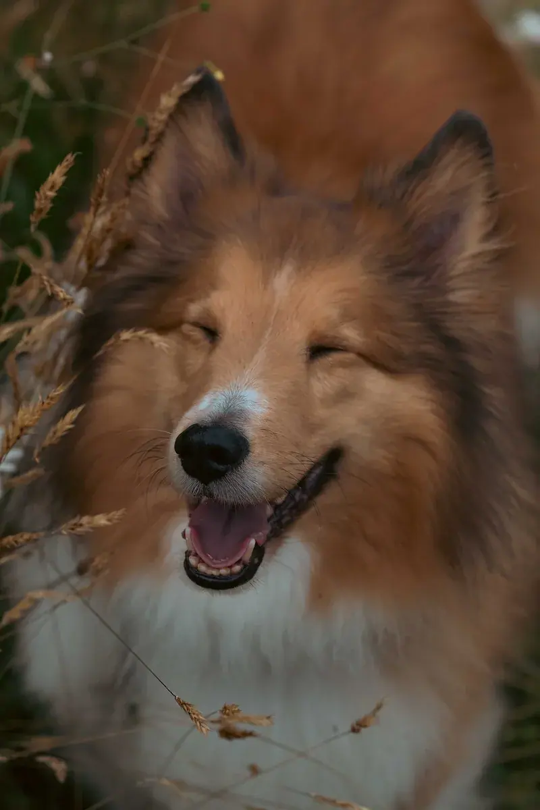
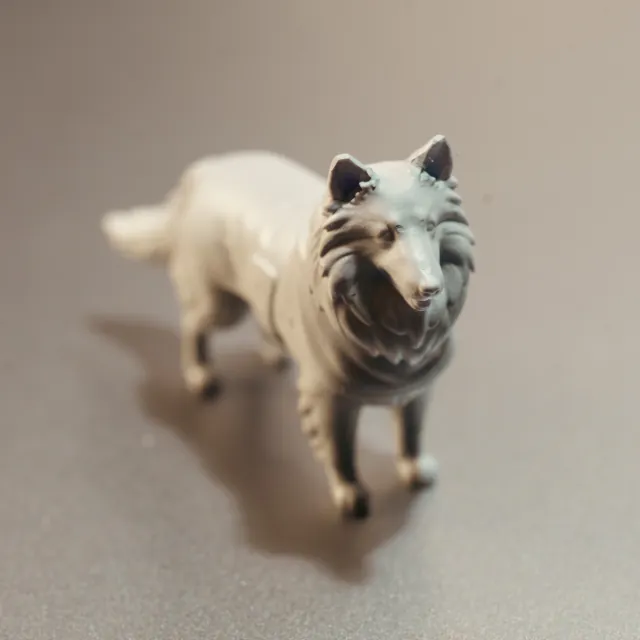
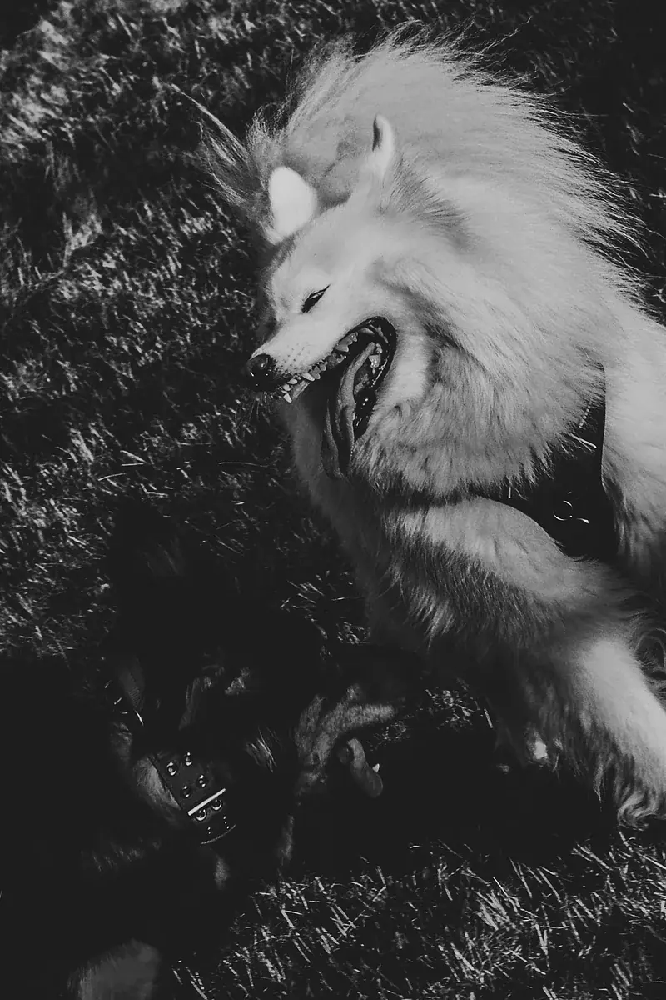
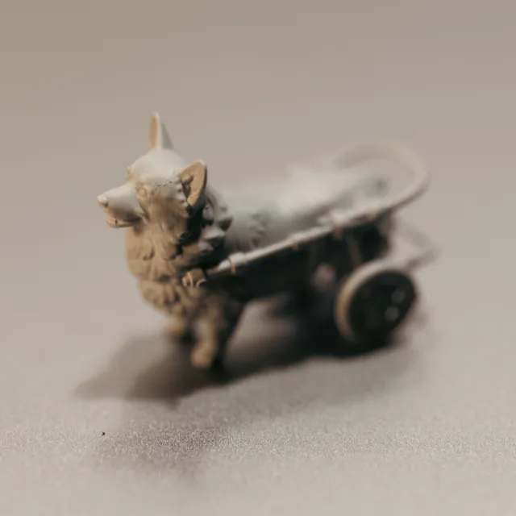

h
An afternoon with your dog, and a little one to keep afterwards.
Photographs, modelling and printing — all by the same pair of hands.
影相、起模、打印，由頭到尾同一個人做。
portfolio
Good dog.
Burnaby, B.C.English · 廣東話 · 普通話
Spend an afternoon together. Take one home.
We go somewhere your dog likes, and I photograph the way they actually
are — the daft grin, the ears, the way they lean on you. Then I pick one frame,
model it, and print it small enough to sit on your desk.
我哋揀個佢鍾意嘅地方，影返佢平時個樣——傻笑、豎起對耳、側埋嚟挨住你嗰下。
之後揀一張，起模，打印成一隻可以擺喺書枱上面嘅細狗。
From the photograph, to something you can hold 由相片到攞得上手

→


→

Your photograph, then the same dog in your hand. 你張相，然後係同一隻狗。
Anywhere from 1×1 to 3×3 cm. 由 1×1 到 3×3 厘米都做得。
What it costs 價目（加幣）
The sessionAn hour together, and 20 finished photographs.影一個鐘，交 20 張執好嘅相。
per hour$300
The little oneModelled from your photograph and printed. On its own.由你張相起模再打印。單買。
$300
BothBook a session and add $150 — the little one is included.影相之後加 $150，就有埋隻模型。
session +$150
- It comes to you unpainted. Most people paint it themselves, at the kitchen
table, badly and happily. That part is yours.
寄到嘅時候係淨色嘅。多數人自己上色——喺廚房枱度，畫得唔靚但好開心。嗰part係你嘅。
- Nothing is off a shelf. It is modelled from your dog, so the ears sit the
way your dog's ears sit. No two come out the same.
冇現成款。照你隻狗起模，所以對耳係佢嗰對耳嘅角度。冇兩隻會一樣。
- Cats, rabbits, birds, the old one who has gone. Send a photograph and ask.
貓、兔、雀仔，走咗嗰隻都做得。send 張相過嚟問一句就得。